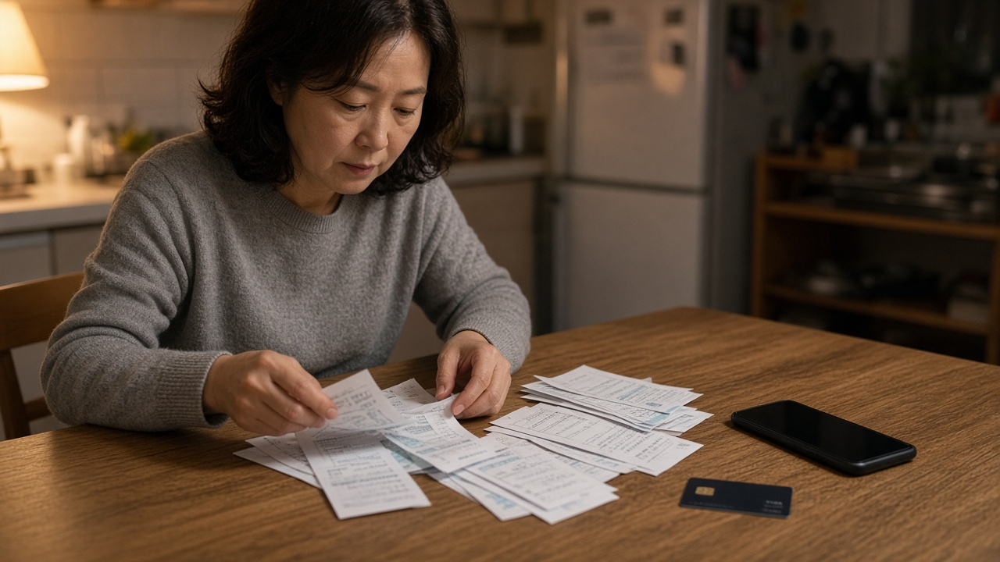
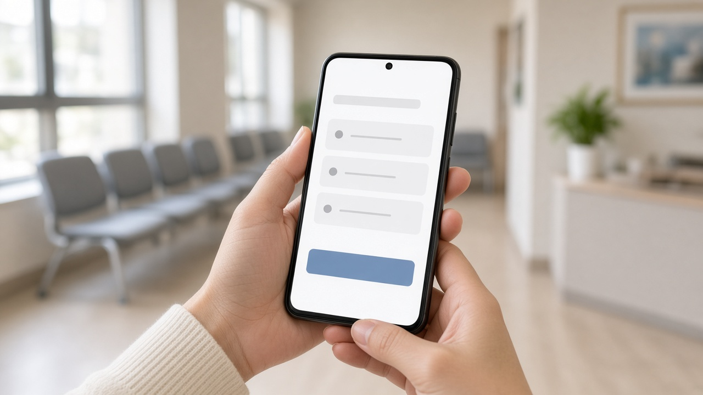

병원비 영수증 잃어버렸어도 괜찮을까, 3년 지나면 사라지는 실손보험금과 내년 1분기 미청구 보험금 찾기 서비스

감기로 동네 의원에 다녀오거나 약국에서 몇천 원 결제하고 나면 실손보험 청구는 귀찮아서 미뤄 두는 경우가 많아요.
그런데 실손보험금은 3년이 지나면 청구할 권리가 사라지기 때문에, 미루다 보면 받을 돈을 그냥 놓치게 돼요.
금융위원회가 11월 19일 실손보험 점검회의에서 최근 3년 동안 청구하지 않은 보험금을 실손24 앱에서 찾아 주는 서비스를 내년 1분기에 열겠다고 밝혔어요.
새 서비스가 어떻게 돌아가는지, 그리고 서비스가 나오기 전에 지금 직접 챙길 수 있는 방법을 차례로 정리해 볼게요.
놓친 실손보험금, 얼마나 되고 왜 생기나
금융위원회는 2024년부터 2026년까지 3년 동안 청구되지 않은 실손보험금을 최대 1조원 규모로 추정했어요.
연합뉴스 보도에 따르면 지난해 한 해 기준으로만 약 3천386억원이 청구되지 않은 것으로 추정돼요.
지금 실손24로 청구하려면 다녀온 병원과 약국을 직접 골라 진료 기록을 입력해야 해서, 병원 이름이 기억나지 않으면 쓰기 어려웠어요.
보험사 앱이나 홈페이지로 이미 청구한 건인지도 실손24에서 확인하기 어려워 내가 무엇을 청구했고 무엇을 빠뜨렸는지 알기 힘들었던 거예요.

미청구 보험금 찾기 서비스는 이렇게 작동해요
실손24 앱 안에서 금융마이데이터 조회에 동의하면 카드 결제 기록에 남은 병원 이름, 결제일, 금액으로 지난 3년 동안의 진료 날짜를 찾아내요.
이 방문 날짜를 한국신용정보원에 모인 보험금 청구와 지급 기록과 맞춰 보고, 청구하지 않은 것으로 보이는 보험금을 알려 주는 방식이에요.
다녀온 병원이 실손24에 연결된 곳이면 앱 안에서 바로 청구까지 할 수 있고, 연결되지 않은 곳이면 그 병원에서 청구 서류를 직접 떼어 보험사에 내야 해요.
서비스는 관련 기관 사이의 시스템 개발과 법령 개정을 거쳐 2027년 1분기 중에 문을 열 예정이고, 병원 이용 기록과 결제 정보를 다루는 만큼 동의 절차와 보안을 갖추겠다고 했어요.
내가 다닌 병원이 실손24에 연결돼 있는지가 중요해요
11월 18일 기준으로 실손24에 연결된 곳은 병원 1,439곳, 보건소 3,578곳, 의원 30,444곳, 약국 21,797곳을 합쳐 57,258곳이에요.
전체 요양기관 대비 연계율은 약 54.2퍼센트라서 아직 절반 가까이는 종이 서류를 떼어 청구해야 하는 상황이에요.
정부는 연말까지 연계율을 80에서 90퍼센트로 높이는 것을 목표로 병원과 약국을 설득하고 있다고 밝혔어요.
10월 7일부터는 네이버 지도, 네이버페이, 토스 앱 안에서도 실손24 청구를 끝까지 마칠 수 있게 바뀌었어요.
서비스 나오기 전에 지금 해 둘 일
보험금 청구권은 상법상 3년이 지나면 시효로 사라지기 때문에, 2023년 말쯤 진료받은 건은 내년 서비스가 열리기 전에 기한이 지날 수 있어요.
그래서 오래된 진료일수록 새 서비스를 기다리기보다 지금 카드 명세서에서 병원과 약국 결제 내역을 뽑아 날짜순으로 정리해 두는 것이 좋아요.
실손24에 연결된 곳이면 앱에서 바로 청구하고, 연결되지 않은 곳은 병원에 진료비 영수증과 세부내역서 같은 청구 서류를 다시 발급해 달라고 요청하면 돼요.
가입한 실손보험이 몇 개인지, 보험 기간이 언제까지인지 모르겠다면 생명보험협회와 손해보험협회가 함께 운영하는 내보험찾아줌에서 먼저 확인할 수 있어요.
정리하면 이렇게 하세요
지난 3년 동안 다녀온 병원과 약국 결제를 카드 명세서로 확인하고, 청구하지 않은 건이 있는지 먼저 살펴보세요.
오래된 진료부터 순서대로 청구하고, 실손24 연결 여부에 따라 앱으로 청구할지 서류를 떼어 낼지 나누면 돼요.
미청구 보험금 찾기 서비스는 2027년 1분기 출시 예정이라 구체적인 시작일과 이용 방법은 금융위원회와 실손24 공지에서 다시 확인하세요.
한편 11월 23일부터는 초기 실손 가입자의 5세대 전환 할인과 선택형 할인특약이 시작되니, 전환을 고민 중이라면 보장 범위를 꼼꼼히 비교한 뒤 정하세요.
참고 자료 금융위원회 보도자료 2026년 11월 19일 배포 깜빡 잊고 지나가버린 지난 3년간 실손보험금 실손24를 통해 한방에 청구하고 받을 수 있습니다, 대한민국 정책브리핑 2026년 11월 19일, 연합뉴스 2026년 11월 19일 보도, 상법 제662조 국가법령정보센터
태그 실손보험 실손보험청구 실손24 미청구보험금 실손보험금찾기 보험금소멸시효 내보험찾아줌 금융위원회 실손청구 보험금청구